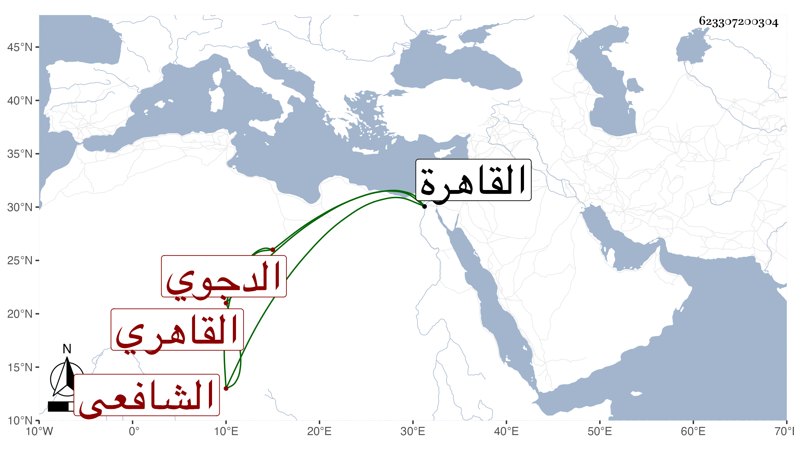

0902Sakhawi.DawLamic.ITO20230111-ara1.EIS1600.623307200304
Biography ID: 623307200304
370
محمد بن محمد بن علي بن أبي بكر بن عبد المحسن بن عنان بن منجا الزين بن الشمس الدجوي الأصل القاهري الشافعي والد المحب محمد الآتي ويعرف بالدجوي . ولد في المحرم سنة تسع وعشرين وثمانمائة بالقاهرة ونشأ بها فحفظ القرآن والحاوي وألفية النحو وعرض على جماعة وقرأ على العيني في تصريف العزي ولازمه وعلى الشمس بن العماد في الفقه بل حضر دروس العلم البلقيني والمناوي وغيرهما وسمع على شيخنا ابن أصيل وكتب يسيرا على ابن حجاج ، وتكسب بالشهادة وتميز فيها وعرف بمزيد الهمة والفتوة مع التقلل ومخالطة الناس وناب في القضاء في سنة أربع وستين عن البلقيني فمن بعده وخطب ببعض الأماكن ، وأثكل ولدا له شابا حسنا فصبر ، وحج في سنة أربع وثمانين ونظم في توجهه قصيدة نبوية أولها :
| صلاة وتسليم من الملك البر | على المصطفى المبعوث للناس بالبر |
| منها : فقير وضيف جئت أبغي تكرما | فجد وتفضل واغن يا ذا الغنى فقري |
وتعرض فيها لمنام رآه له بعضهم وأن النبي صلى الله عليه وسلم أرسل له ماء ليتوضأ به ، وكان كثير الاستحضار لنوادر الشعر ومهمات الوقائع مجيدا لتأدية ذلك . مات في ليلة الأربعاء حادي عشرى رمضان سنة إحدى وتسعين بقرحة جمرة تعلل منها قليلا وصلى عليه من الغد بجامع المارداني لقربه من منزله ووصيته بذلك رفعا للكلفة ثم دفن بزاوية الشيخ أبي العباس البصير عند أولاده رحمه الله وإيانا .
